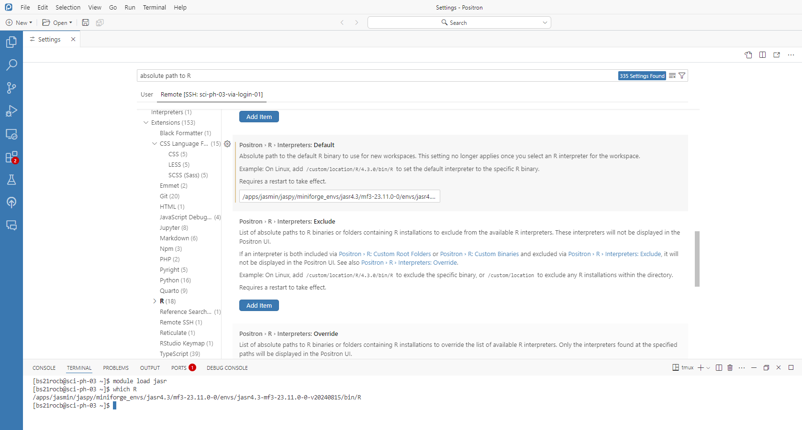
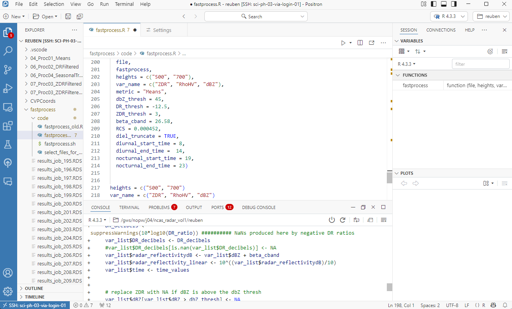

Positron for JASMIN
The following document provides some basic information to help R users get started on JASMIN. A new IDE called Positron, made by the developers of RStudio, has recently become available. This IDE is well suited to working on JASMIN for existing RStudio users.
What is JASMIN
JASMIN is a set of servers used for storage and analysis of environmental data, operated by NERC. If you are NERC funded you should be able to access the service. Through JASMIN, you can access the CEDA Archive which hosts lots of useful environmental data sets, including data collected by Met Office Radars.
If you have not set up JASMIN, do that first. https://help.jasmin.ac.uk/docs/getting-started/
Lots of useful information is provided on the JASMIN help site, linked above. If in doubt, refer to that information, not here!
Using R on JASMIN
JASMIN has an R module called Jasr which runs through Jaspy.
When connected to a JASMIN science server - for example via a terminal, Termius or MobaXterm - one can run R interactively.
1. Connect to a science server.
After entering a login server, you will want to pick the science server with the lowest usage in memory and CPU. This may be a physical (ph) server.
2. (optional) Open a screen.
A screen lets you run multiple shells from a single terminal. In practice, this means that if you get disconnected from JASMIN, your R session is not lost.
> screen -dRR [choose a screen name, e.g my_R_session]
To list your current screens
> screen -ls
To reconnect to a screen
> screen -r my_R_session
To disconnect from a screen, press Ctrl-A-DCtrl-A-D
3. Load and run R
> module load jasr
> R
You now have an interactive R session
setwd("/gws/nopw/j04/ncas_radar_vol1/username/")
require(data.table)
dt <- fread("mydata.csv")
To return to your previous terminal, press Ctrl-A-DCtrl-A-D
Note: the sci servers are not designed for long running or computationally intensive tasks. They are good for testing and exploring code. To run larger jobs, you must use the SLURM scheduler https://help.jasmin.ac.uk/docs/batch-computing/
Using RStudio Terminal
One way to work on JASMIN is to interact with the server through the RStudio Terminal window. Here, you can use RStudio in a limited capacity, essentially as a text editor with none of the other IDE features of RStudio.
To achieve this, open a shell script with RStudio with File>New File> Shell Scripts. One could save commonly used commands, like > ssh -A USERNAME@login-01.jasmin.ac.uk to a .sh script. Press Ctrl-Alt-EnterCtrl-Alt-Enter to send a line of code to the terminal window.
You may notice that this interactive R session is lacking in several regards. What we are missing is a functional IDE, an Integrated Developing Environment. RStudio is the IDE preferred by most R users. Locally, it allows us to work more efficiently by providing us with a plot viewer, data viewer, variable list, an area to write out our scripts, etc.
Connecting to JASMIN from the RStudio terminal window may be preferable to doing so via another terminal client, like MobaXTerm or Cmd, as one can write and save scripts (locally). However, with this method, RStudio has no way of communicating with JASMIN, we are missing the useful RStudio features like the data viewer and plot viewer.
Unfortunately, there is currently no way of using RStudio in this manner on JASMIN, beyond using it as a place to write our code before we send it to the server. The JASMIN support team has determined that “RStudio is an IDE that is not particularly suited to use on JASMIN” and as such it will not be supported.
VSCode
Fortunately, we have other IDEs to choose from. One popular option is Microsoft’s VSCode. This IDE is powerful & widely used for various coding tasks. Importantly, one can access JASMIN from VSCode.
While R is perfectly usable within VSCode with some additional setup, there is good reason why many R users prefer RStudio to VSCode, the latter is geared more towards general purpose programming than data analysis specifically. Features of RStudio one may miss in VSCode include:
The plot viewer
The dataframe viewer
RMarkdown and Quarto
The objects panel
It is possible to configure VS code to include these features using the session watcher. But none come out-of-the-box. Anecdotally, R users may find VSCode buggy and finicky in comparison to RStudio.
Positron
Another option is Positron.
Positron is an (in development) IDE built by Posit, the developers of RStudio, using the open source components of VS code. As such shares many powerful features of both VSCode and RStudio. In contrast to VS code, which is designed for many types of programming, Positron is designed with data analysis in mind. To this end, it arguably exceeds RStudio in some respects. For example, it has small improvements to the plot and data viewer options. It also has much better support for Python. RStudio users may find Positron to be more familiar and quicker to get running than VSCode. Running Positron locally, the software will automatically identify R and Python installations, allowing one to easily switch between R and Python environments. For an overview of the design behind Positron, please see this presentation given at the Posit 2024 conference.
- Install Positron locally (there is no need to install the software on JASMIN): https://positron.posit.co/download.html
- Allow firewall access, wait for Positron to detect local R and python interpreters.
- We will now instruct positron on how to connect to JASMIN by presenting our SSH keys, connecting to a login server, then connecting to a science server. First, open the command palette at the top of the screen and type >SSH. Open the SSH Configuration file.

- Create and save the following config file, replacing USERNAME with your JASMIN username, and IdentityKey with the location of your SSH key. This will allow you to jump from login01 to sci-ph-03, for example. You may wish to set the config file to jump to an alternative sci server.
Host sci-ph-03-via-login-01 Hostname sci-ph-03.jasmin.ac.uk User USERNAME ProxyJump USERNAME@login-01.jasmin.ac.uk ForwardAgent yes IdentityFile C:/path_to_your_ssh_key/.ssh/id_rsa_jasmin- On the
Remotessection, on the left hand side of the window, you should now see the option to connect to sci-ph-03-via-login-01. Click connect to host.
If positron cannot connect to JASMIN, you may wish to load your SSH key into an agent. On Windows this is simple, and involves navigating to Services, finding OpenSSH authentication agent, setting to manual and starting the service.
Adding the Jasr interpreter to Positron.
On the Terminal window, you should now be connected to your specified science server.
The Console window may read there is no interpreter running.
R is an interpreted language, and the R interpreter executes the code that you write. The R interpreter we can use within JASMIN is called Jasr. To use the Jasr interpreter, we need to tell positron where it is stored on JASMIN.
To find the location of the interpreter, in the terminal window, run:
> module load jasr > which RThis command should give an output similar to:
/apps/jasmin/jaspy/miniforge_envs/jasr4.3/mf3-23.11.0-0/envs/jasr4.3-mf3-23.11.0-0-v20240815/bin/R
Now we will tell Positron the location of Jasr. Open settings, from the bottom left corner. In the settings window, open the Remote settings tab. In these settings, find Postron > R > Interpreters: Default. Paste the directory produced by which R.

Restart Positron and select the R interpreter at the top right hand corner.

To open your group work space (GWS) directory, File > Open Folder. Type your GWS directory.

You can now use Positron to write and execute R code interactively, in a similar fashion to working locally with RStudio.
Other tips
To upload a file to JASMIN, simply drag and drop from your local machine into Positron’s Explorer tab. To download a file form JASMIN, right click download. To transfer larger files, connect to an Xfer server instead of a science server.
To use familiar RStudio key mappings, search for
keymapin settings and enable RStudio key mappings. This will enable Ctrl-1Ctrl-1 for focus source and Ctrl-Shift-CCtrl-Shift-C to comment out code